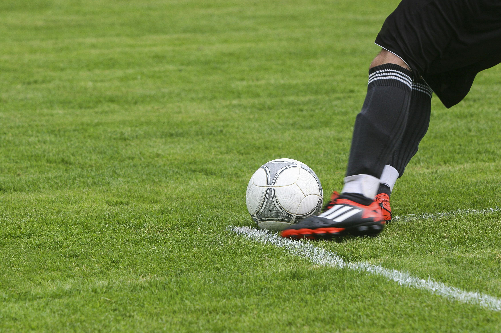

¿Por qué me gusta jugar fútbol?
Desde pequeño he jugado fútbol con mis amigos. Y siento que es el deporte que mas se me ha dado comparado con otros deportes.
Me gusta mucho estar jugando.
El futbol es el mejor deporte.
Desde pequeño he jugado fútbol con mis amigos. Y siento que es el deporte que mas se me ha dado comparado con otros deportes.
Me gusta mucho estar jugando.
El futbol es el mejor deporte.

FCB es uno de los equipos más conocidos del mundo y uno de mis favoritos.
La pasión por el fútbol - Una página de noticias que es bastante clara e informativa.
Última actualización: agosto 2025
¡A por todo!
Siempre hay que dar lo mejor en la cancha
Mi apodo es El Bicho
Después de cada partido bebo 1 litro de H2O y corro hasta 3km sin parar.
Mi equipo favorito es el Real Madrid.
AÑADI ESTO SOLO PARA LA PRACTICA
| Nombre | Nacimiento |
|---|---|
| Cristiano Ronaldo | 5 de febrero de 1985 |
| Lionel Messi | 24 de junio de 1987 |